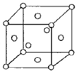
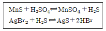
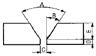
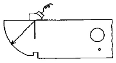

초음파비파괴검사산업기사 (2015-08-16 기출문제)
1과목: 비파괴검사 개론
1. 누설시험법 중 대형 용기나 저장탱크 검사에 이용되지만 누설위치의 측정에는 적합하지 않은 검사법은?
- 기포누설시험
- 헬륨누설시험
- 할로겐누설시험
- 압력변화누설시험
(정답률: 79%)

2. 비파괴검사에 대한 다음 설명 중 옳은 것은?
- 어떠한 비파괴검사 방법을 적용하여도 모든 종류의 결함을 검출할 수 있다.
- 어떠한 시험체라도 모든 종류의 비파괴검사 방법을 적용하는 것이 가능하다.
- 비파괴검사의 목적은 결함이 존재하지 않는 완벽한 제품을 제조, 판매하는데 있다.
- 비파괴검사는 재료의 물리적 성질이 결함의 존재에 의하여 변화하는 사실을 이용한다.
(정답률: 78%)
3. 다음 결함 중에서 침투탐상시험의 대상으로 적당하지 않은 것은?
- 단조품의 표면 결함
- 용접부의 표면하 결함
- 주조품의 열간 터짐
- 강자성체의 표면흠
(정답률: 77%)
4. 전자방출(Eiectron emission) 방사선투과시험의 원리를 바르게 설명한 것은?
- 쌍극자 회절에 의한 농도차
- 결정구조로 인한 회절
- 높은 원자번호의 재질에서 더 많은 방출로 기인한 전자방출의 차
- 에너지가 다른 전자의 투과 능력에 의해 형성된 필름농도 차
(정답률: 72%)
5. 다음 중 압연 강판에 내재된 비금속 개재물을 검출하는데 가장 효과적인 비파괴검사법은?
- 와전류탐상시험
- 초음파탐상시험
- 자분탐상시험
- 침투탐상시험
(정답률: 94%)
6. 강중에서 특수원소의 주요한 역할을 설명한 것으로 틀린 것은?
- 변태속도를 고정한다.
- 소성가공성을 개량한다.
- 오스테나이트의 입자를 조정한다.
- 기계적, 물리적 성질 등을 개선한다.
(정답률: 71%)
7. 구리합금의 주된 사용 용도가 아닌 것은?
- 자동차엔진
- 전기배선용
- 열교환기용
- 건축물 외곽 장식용
(정답률: 77%)
8. Fe-C 상태도에서 기호와 조직의 명칭이 틀리게 짝지어진 것은?
- α고용체 : 페라이트
- γ고용체 : 오스테나이트
- α고용체 + Fe3C : 필라이트
- γ고용체 + Fe3C : 시멘타이트
(정답률: 82%)
9. 그림과 같은 단위격자를 갖는 금속은?

- Mo, Cr, Fe
- Ag, Al, Au
- Co, Mg, Ti
- Pb, Be, Cd
(정답률: 78%)
10. 탄소강재의 담금질시 강재의 탄소량에 따라서 마텐자이트 변태를 일으키는 임계냉각속도가 가장 느린 것은?
- SM25C
- SM45C
- SS400
- STC5
(정답률: 75%)
11. 주조용 알루미늄 합금의 질별 기호를 설명한 것 중 틀린 것은?
- H : 가공 경화한 것
- O : 가공재를 풀림한 것
- F : 주조한 상태 그대로의 것
- W : 뜨임 후 인공시효 진행 중인 것
(정답률: 72%)
12. 주철의 일반적인 특징을 설명한 것으로 틀린 것은?
- 전탄소는 흑연 + 화합탄소이다.
- 용융점은 C 와 Si가 많아지면 높아진다.
- 흑연편이 클수록 자기 감응도가 나빠진다.
- 강보다 유동성이 좋으며, 충격저항이 나쁘다.
(정답률: 80%)
13. 미세결정립 및 변태 초소성에서 입계가 활성화하여 발생하는 현상을 응용한 기술은?
- 방진
- 고장력
- 고상접합
- 자기윤활성
(정답률: 75%)
14. 강편이나 강제품의 표면의 결함 및 품질상태를 검출하기 위하여 [보기]와 같은 반응을 이용한 시험 방법은?

- 아말감법
- 레프리카법
- 설퍼프린트법
- 매크로시험법
(정답률: 80%)
15. 분말 야금법의 특징으로 옳은 것은?
- 제품의 크기에 제한이 없다.
- 생산성 및 실수율이 낮다.
- 가공품의 형상에 제한이 없다.
- 용해법으로 생기는 편석, 결정립 조대화의 문제점이 적다.
(정답률: 64%)
16. 고진공의 상태에서 용접하며, 용접비드의 폭이 매우 좁고 용입이 깊은 용접법은?
- 확산용접
- 전자빔용접
- 마찰용접
- 저항스폿용접
(정답률: 89%)
17. 무부하 전압이 80V, 아크 전압 28V, 아크 전류 350A라 하면 교류 용접기의 역률과 효율을 구하면? (단, 내부손실 4kW이다.)
- 역률 : 약 44%, 효율 : 약 66%
- 역률 : 약 49%, 효율 : 약 71%
- 역률 : 약 54%, 효율 : 약 75%
- 역률 : 약 59%, 효율 : 약 82%
(정답률: 74%)
18. 그림과 같은 맞대기 용접 이음 홈에서 A, B, C부 명칭으로 무도 올바른 것은?

- A : 베벨 각, B : 홈 각도, C : 개선 깊이
- A : 개선 각, B : 베벨 각, C : 루트 면
- A : 홈 각도, B : 베벨 각, C : 루트 면
- A : 홈 각도, B : 베벨 각, C : 루트 간격
(정답률: 83%)
19. 용접부의 외관섬사로 가장 찾아내기 어려운 결함은?
- 슬래그 섞임
- 오버랩
- 언더 컷
- 표면 균열
(정답률: 87%)
20. 교류 아크 용접기의 종류가 아닌 것은?
- 가동철심형
- 정류기형
- 가동코일형
- 탭 전환형
(정답률: 72%)
2과목: 초음파탐상검사 원리 및 규격
21. 초음파탐상시 표면 거칠기로 인한 감도 및 분해능 저하를 줄이기 위한 방법으로 틀린 것은?
- 표면을 매끄럽게 한다.
- 탐상기의 게인(gain)을 올린다.
- 초음파 출력이 낮은 탐촉자를 사용한다.
- 탐촉자에 표면 보호막을 사용하여 검사체와의 접촉을 개선한다.
(정답률: 56%)
22. 초음파탐상시 감도조정에 대한 설명으로 옳은 것은?
- 저면에코방식에 의한 감도조정은 감쇠가 적은 시험체에만 적용할 수 있다.
- 저면에코방식에 의한 감도조정은 시험체의 탐상면과 저면이 평행하지 않으면 적용하기 어렵다.
- 저면에코방식에 의한 감도조정은 감쇠가 현저한 시험체일 때 결함은 과소평가할 우려가 있다.
- 저면에코방식에 의한 감도조정은 감도조정용의 STB 또는 RB가 반드시 필요하다.
(정답률: 74%)
23. 용접부 내의 기공에 대한 설명으로 가장 거리가 먼 것은?
- 용접아크의 쉴드가 나쁜 경우 발생할 수 있다.
- 용접봉 피복제에 습기가 많은 경우 발생할 수 있다.
- 응력집중이 매우 큰 유해결함이므로 주의를 요한다.
- 초층 용접부에서는 선형기공의 발생이 많으며 이 경우 용입불량과 공존할 경우가 많다.
(정답률: 61%)
24. 초음파탐상시 탐상방법에 대한 설명으로 옳은 것은?
- 초음파탐상기 눈금판의 횡축은 초음파빔의 전파거리, 종축은 에코높이를 표시한다.
- 초음파탐상도형에 있어서 결함에코의 발생 위치로부터 결함의 치수를 안다.
- 결함위치는 결함을 겨냥하는 방향을 바꾸어 에코높이의 변화 모양으로부터 추정할 수 있다.
- 재료 중에서 초음파의 음속은 다중반사에 의한 저면에코 높이의 저하 비율로부터 측정할 수 있다.
(정답률: 65%)
25. 수침법에서 첫 번째 저면 반사에코 앞에 탐상면에 의한 지시에코가 많이 나타나는 것을 무엇으로 제거할 수 있는가?
- 주파수를 변형 시켜서 변형
- 증폭기를 감소시켜서 제거
- 탐촉자와 시편과의 물거리를 조정하여 제거
- 오목렌즈를 사용해서 제거
(정답률: 82%)
26. 음속의 지향각 때문에 음파가 저면에 도달하기 전에 시험체의 옆면에서 반사되면 어떤 현상이 생기는가?
- 중복 저면 반사가 생긴다.
- 중복 전면 반사가 생긴다.
- 모드변환(mode conversion)이 생긴다.
- 전면 반사 지시치가 작아진다.
(정답률: 74%)
27. 탐촉자의 진동자 재료에 대한 설명으로 틀린 것은?
- 티탄산바륨은 가장 좋은 송신용 탐촉자 재료로 쓰인다.
- 수정은 화학적, 전기적, 열적으로 매우 안정되어 있다.
- 황산리튬은 수신용 탐촉자로써 가장 좋은 재료이다.
- 300℃ 이상에서 사용할 수 있는 것은 황산리튬이다.
(정답률: 84%)
28. 초음파진행시 진동자의 표면으로부터 거리가 멀어질수록 음압은 지수함수적으로 감소하게 되는데 이러한 영역을 무엇이라 하는가?
- 감쇠
- 분산
- 근거리 음장
- 원거리 음장
(정답률: 67%)
29. 다음 중 재료의 음향임피던스가 갖는 주된 요소는 무엇을 결정하는데 사용되는가?
- 재료 표면에서의 음속
- 경계면에서의 굴절각
- 재료 내에서의 빔의 확산
- 경계면에서 통과 및 반사되는 에너지의 양
(정답률: 84%)
30. 얇은 두께를 갖는 압전소자의 경우 주파수는?
- 주파수가 낮다.
- 주파수가 높다.
- 별 영향이 없다.
- 높다가 낮아진다.
(정답률: 71%)
31. 보일러 및 압력용기에 대한 초음파탐상검사(ASME Sec.V Art.4)에서 규정하는 특수한 경우를 제외한 탐촉자의 최대 이동 속도는?
- 100 mm/초
- 150 mm/초
- 200 mm/초
- 250 mm/초
(정답률: 64%)
32. 초음파탐상 시험용 표준시험편(KS B 0831)에서 STB-N1 표준시험편은 어떤 경우에 사용하는가?
- 수직탐촉자의 분해능 측정
- 경사각탐촉자의 굴절각 측정
- 수직탐촉자의 탐상감도 조정
- 곡률이 있는 시험재의 탐상시 경사각탐촉자의 원점 측정
(정답률: 60%)
33. 보일러 및 압력용기의 재료에 대한 초음파 탐상검사(ASME Sec.V Art.5)에서 요구하는 주조품에 대한 교정시험편의 두께는?
- 검사할 주조품 두께의 ±10%
- 검사할 주조품 두께의 ±15%
- 검사할 주조품 두께의 ±25%
- 검사할 주조품 두께의 ±30%
(정답률: 62%)
34. 강용접부의 초음파 자동탐상 방법(KS B 0894)에서 탐상기에 필요한 기능 및 성능에 대한 설명으로 틀린 것은?
- 감도 여유값의 성능은 40dB 이상으로 한다.
- 증폭 직선성의 성능은 ±3%의 범위 내로 한다.
- 시간축의 직선성의 성능은 ±3% 범위 내로 한다.
- 자동 탐상기의 게인 조정기는 1스텝 1dB 이하로 합계의 조정량은 50dB 이상으로 한다.
(정답률: 65%)
35. 강용접부의 초음파탐상 시험방법(KS B 0896)에 의해 곡률 반지름이 200mm 인 원둘레이음 용접부를 탐상하고자 할 때 탐상감도 조정에 사용하는 대비시험편은?
- STB-A2
- RB-4
- RB-A8
- STB-A3
(정답률: 54%)
36. 보일러 및 압력용기에 대한 초음파탐상검사(ASME Sec.V Art.4)에 따라 직접 접촉법에 의한 초음파탐상시 보정시험편과 시험체 표면과의 온도 차이는 얼마까지 허용되는가?
- 8℃
- 10℃
- 14℃
- 18℃
(정답률: 68%)
37. 강용접부의 초음파탐상 시험방법(KS B 0896)의 탠덤탐상에서 Ⅲ영역 이상을 평가대상으로 할 때 어떤 검출 레벨을 지정하는가?
- L 검출 레벨
- M 검출 레벨
- H 검출 레벨
- (H + 6dB) 검출 레벨
(정답률: 73%)
38. 보일러 및 압력용기의 재료에 대한 초음파 탐상검사(ASME Sec.V Art.5)에서 펄스 에코방식의 초음파 탐상장치의 주파수 요건 범위는?
- 1MHz ~ 3MHz
- 2MHz ~ 5MHz
- 1MHz ~ 5MHz
- 2MHz ~ 4MHz
(정답률: 88%)
39. 초음파 탐촉자의 성능 측정 방법(KS B ⑤35)에서 직접접촉용 1진동자 경사각 탐촉자의 측정항목이 아닌 것은?
- 빔 중심축의 편심과 편심각
- 입사점
- 집속범위 및 빔폭
- 불감대
(정답률: 50%)
40. 초음파탐상장치의 성능측정 방법(KS B ⑤34)에서 초음파 탐상기의 성능측정 항목으로 틀린 것은?
- 증폭 직선성
- 시간축 직선성
- 근거리 분해능
- 불감대
(정답률: 72%)
3과목: 초음파탐상검사 시험
41. 초음파탐상에 사용하는 탐촉자에 대한 설명으로 옳은 것은?
- 통상의 1진동자 수직탐촉자는 송신펄스폭이 넓기 때문에 근거리 탐상에 유리하다.
- 2진동자(분할형) 탐촉자는 원거리 결함의 탐상에 유리하다.
- 2진동자(분할형) 탐촉자에 의한 탐상도형에는 송신펄스 다음에 표면에코가 크게 나타난다.
- 2진동자(분할형) 탐촉자에는 지연재에 의한 표면에코가 거의 나타나지 않는다.
(정답률: 55%)
42. 용접부탐상에서 시험체의 두께가 두꺼울 때 사용되는 탐촉자의 굴절각에 대한 설명으로 옳은 것은?
- 굴절각이 큰 탐촉자를 사용한다.
- 굴절각이 작은 탐촉자를 사용한다.
- 시험체 두께와 굴절각은 관계가 없다.
- 주로 수직탐촉자를 사용한다.
(정답률: 66%)
43. 다음 중 초음파에 대한 설명으로 옳은 것은?
- 초음파는 2kHz 이상의 음파이다.
- 초음파는 모두 음파의 진행방향과 매질의 진동방향이 같은 종파이다.
- 초음파의 속도는 매질의 탄성계수가 클수록 작다.
- 초음파의 속도는 주파수와 파장의 곱으로 나타낼 수 있다.
(정답률: 72%)
44. 감쇠가 적은 재료를 펄스 반복주파수가 높은 탐상기로 탐상할 때 측정범위 내에서 원래의 거리보다 가까운 거리에 있는 것과 같이 나타나서 결함 에코로 착각할 수 있는 지시는?
- 다중 저면반사
- 다중 에코 반사
- 잡음파
- 코스트 에코
(정답률: 65%)
45. 단강품을 2MHz의 주파수로 탐상하니 전체적으로 임상에코가 높게 나타나고 저면에코가 충분히 나타나지 않았다. 탐상조건으로 어느 것을 일차적으로 선택하는 것이 좋은가?
- 탐상감도를 더욱 높게 한다.
- 탐상감도를 더욱 낮게 한다.
- 주파수를 더욱 높게 한다.
- 주파수를 더욱 낮게 한다.
(정답률: 75%)
46. 다음 중 분할형 탐촉자에 관한 설명으로 옳은 것은?
- 진동자는 송신용과 수신용의 2개로 분할되어 있으므로 불감대는 짧다.
- 탐상면으로부터 먼 결함의 검출에 적합하다.
- 2개의 진동자의 빔각도가 경사되어 있으므로 특정 탐상 영역 이외에서는 조합 탐상감도가 높아진다.
- 탐상면에서 수직인 결함의 검출용에 가장 적합하다.
(정답률: 59%)
47. 다음 투과법에 대한 설명으로 틀린 것은?
- 사용되는 탐촉자는 송신용과 수신용으로 2개를 사용한다.
- 초음파 펄스를 투과시킨 후 반사된 것을 수신하여 재료를 평가한다.
- 투과 도중 발생된 음파의 손실 양으로 재료를 평가 한다.
- 한 개의 탐촉자로는 투과법을 적용할 수 없다.
(정답률: 48%)
48. 관재의 탐상을 직접 접촉법으로 수행하는 방법의 설명으로 틀린 것은?
- 탐촉자 전면에 아크릴 슈(Shoe)를 관재의 곡면과 동일하게 가공해 부착한다.
- 관지름이 200mm 가 넘는 경우에는 탐촉자를 탐촉면의 곡면에 맞출 필요가 없다.
- 탐상면과 탐촉자 전면 사이의 틈에 흐르는 물로 채워(국부 수침법) 검사한다.
- 탐촉자의 접촉면을 시험재 곡면에 맞춘다.
(정답률: 67%)
49. TOFD(Time Of Flight Diffraction)법을 이용한 초음파 탐상검사에 관한 설명으로 옳은 것은?
- 결함의 중심부에서 파형 변이된 초음파를 수신하여 결함의 길이를 측정한다.
- 결함의 끝부분에서 반사하는 초음파의 에코높이를 측정하여 결함의 길이를 측정한다.
- 결함의 끝부분에서 회절하는 파의 진행시간으로부터 결함의 길이를 측정한다.
- 결함을 따라 진행하는 표면파의 진행시간으로부터 결함의 길이를 측정한다.
(정답률: 53%)
50. 다음 중 초음파탐상기의 회로도 중 수신기에 없는 것은?
- 증폭기
- 정류기
- 타이머
- 감쇠기
(정답률: 67%)
51. 다음 중에 두께가 2cm인 청동 판재의 공진 주파수는? (단, 속도는 4.43×105 cm/sec 이다.)
- 0.886MHz
- 0.443MHz
- 0.222MHz
- 0.111MHz
(정답률: 65%)
52. 주파수가 5MHz인 수직탐촉자를 사용하여 STB-A1에 의해 측정범위를 100mm로 조정한 후 두께 50mm인 시험체를 탐상한 결과 빔거리 63.7mm에 첫 번째 저면에코가 나타났다면 이 시험체의 재질은 다음 중 어느 것으로 판단할 수 있는가? (단, 강, 알루미늄, 황동, 납에서의 초음파속도는 각각 5900m/sec, 6350m/sec, 4630m/sec, 2170m/sec이다.)
- 강
- 알루미늄
- 황동
- 납
(정답률: 60%)
53. 입사면에서 6인치(15.24cm) 깊이에 있는 불연속이 그것의 표면조건과 배향을 제외한 모든 조건이 같을 때 CRT 스크린상에 가장 큰 지시로 나타날 수 있는 것은?
- 불연속면이 음파의 전파방향에 75°이고 직경이 5/64인치(0.20cm)의 평활한 면을 가진 불연속
- 불연속면이 음파의 전파방향에 75°이고 직경이 5/64인치(0.20cm)의 거친면을 가진 불연속
- 불연속면이 음파의 전파방향에 수직이고 직경이 5/64인치(0.20cm)의 평활한 면을 가진 불연속
- 불연속면이 음파의 전파방향에 평행하고 직경이 5/64인치(0.20cm)의 거친면을 가진 불연속
(정답률: 73%)
54. 두께 50mm인 강 시험체를 수직탐상한 결과 탐상기 화면에 결함에코(F)와 저면에코(B)가 동시에 나타났다. 이 경우 결함에코와 저면에코의 높이가 비(F/B)가 -18dB 이었다면 저면에코의 높이가 80%가 되도록 장치의 게인을 조정한 경우 결함에코 높이는?
- 약 5%
- 약 10%
- 약 20%
- 약 40%
(정답률: 66%)
55. 용접부의 경사각 탐상에 관한 설명으로 옳은 것은?
- 비드에서의 에코는 결함에코보다 항상 작게 나타나기 때문에 무시해도 좋다.
- 측면의 용입불량(루트혼입불량)은 모드변환 손실이 있기 때문에 검출이 곤란하다.
- 면상결함은 초음파의 입사각도가 바뀌면 에코높이는 현저히 변화한다.
- 동일 탐상면에서 탐상하면 모든 용접부의 결함은 1회 반사법보다 직사법이 에코 높이가 높게 나타난다.
(정답률: 61%)
56. 철판 두께가 25mm인 용접부를 45° 굴절각 경사각탐촉자로 검사하는데 CRT거리 40mm에서 결함파를 검출하였다. 표면세서 결함까지의 깊이는?
- 10mm
- 15mm
- 22mm
- 25mm
(정답률: 62%)
57. 초음파탐상기의 조정 손잡이에 대한 설명으로 옳은 것은?
- 탐상기의 게인 조정 손잡이는 CRT 상의 에코 위치를 좌우로 이동시키는 것이 가능하다.
- 탐상기의 게인 조정 손잡이는 CRT 상의 빔 진행거리를 변화시키는 것이 가능하다.
- 탐상기의 게인 조정 손잡이는 CRT 상의 에코 높이를 변화시키는 것이 가능하다.
- 탐상기의 게인 조정 손잡이는 CRT 상의 에코위치를 아래로 이동시키는 것이 가능하다.
(정답률: 78%)
58. 그림은 탐촉자의 무엇을 측정하는 것인가?

- 입사점
- 감도 여유값
- 원거리 분해능
- 증폭의 직선성
(정답률: 89%)
59. 수직탐상으로 단조품을 검사할 때 탐상감도 설정 방법이 아닌 것은?
- 저면에코방법
- 전면에코방법
- 표준시험편방법
- 대비시험편방법
(정답률: 68%)
60. 경사각탐촉자를 사용하는 경우 다음 중 저면에코를 관찰할 수 있는 것은?
- STB-A1의 100R 면에 겨냥한 경우
- 두 면이 평행한 단조품을 탐상하는 경우
- STB-A2의 반사원이 없는 지점을 겨냥한 경우
- 제2임계각 이상의 탐촉자로 탐상하는 경우
(정답률: 73%)